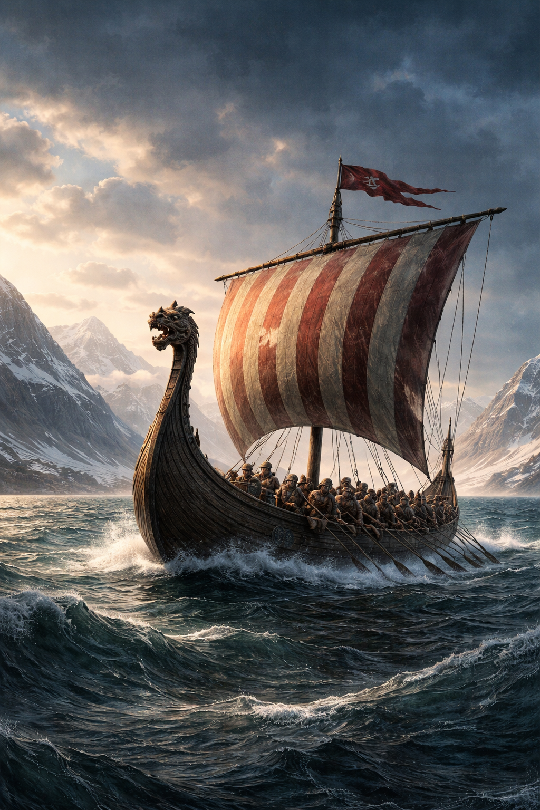
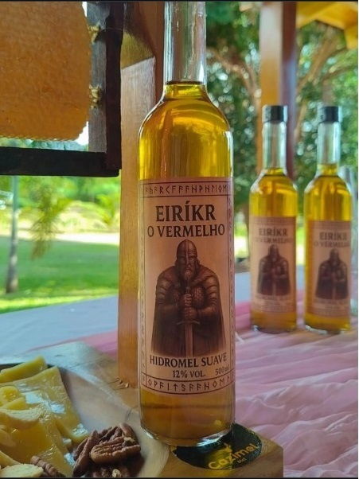

Minha História
Nasci na Noruega, terra de guerreiros e mares frios. Ainda jovem, fui levado para a Islândia, onde tentei construir minha vida.
Mas a paz nunca foi parte do meu destino. Após conflitos e mortes, fui banido da Islândia. Não era a primeira vez que minha família enfrentava o exílio.
Durante esse tempo, naveguei rumo ao desconhecido. Foi assim que encontrei a Groenlândia, uma terra dura, coberta por gelo, mas cheia de possibilidades.
Dei a ela um nome que inspirasse outros a segui-la. Nem toda verdade precisa ser dita por completo quando se busca um novo começo.
Com o tempo, convenci outros a deixarem suas terras e se juntarem a mim. Fundamos assentamentos em um lugar onde apenas os mais fortes sobrevivem.
Meu nome não é lembrado por paz, mas por coragem. Meu legado continuou através do meu filho, Leif Erikson, que navegou ainda mais longe do que eu.
"Alguns homens vivem histórias. Outros se tornam parte delas."
Quem foi Leif Erikson?
Filho de Eiríkr e explorador que chegou à América.
Linha do Tempo
- 950 - Nascimento na Noruega
- 970 - Mudança para a Islândia
- 982 - Exílio
- 985 - Chegada à Groenlândia
Barco Viking

Música de Guerra
Música gerada 100% por IA.
Perguntas
Por que te chamam de o Vermelho?
Alguns dizem que é por causa do meu cabelo. Outros, pelo sangue deixado no caminho. Prefiro não corrigir nenhum deles.
Por que você foi exilado?
Porque não soube viver entre homens que temem o confronto.
O que encontrou na Groenlândia?
Silêncio... e uma nova chance.
Você se arrepende do passado?
O arrependimento é um luxo para quem pode voltar atrás.
O que é ser forte?
Não é vencer batalhas. É continuar quando não há mais motivos.
O que pensa sobre o mundo atual?
Muitos falam. Poucos fazem.
O que é o exílio?
Não é estar longe de casa. É não pertencer a lugar algum.
O que te motiva?
A vontade de ir além do que já foi conquistado.
Você teme algo?
Temo apenas uma vida sem propósito.
Qual foi sua maior conquista?
Começar de novo quando tudo estava perdido.
O que diria para quem lê suas palavras?
Construa seu próprio caminho. Nenhum mapa é confiável.
Você gosta de hidromel?
Hidromel não é apenas bebida. É companhia em noites frias e silêncio após a batalha. Sim... eu respeito um bom hidromel.
Hidromel

Uma bebida digna de um guerreiro.